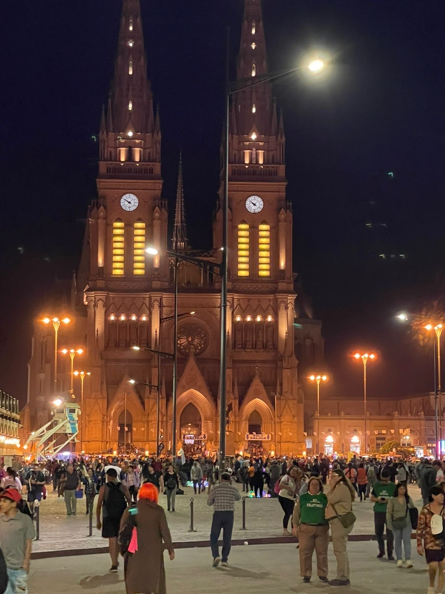
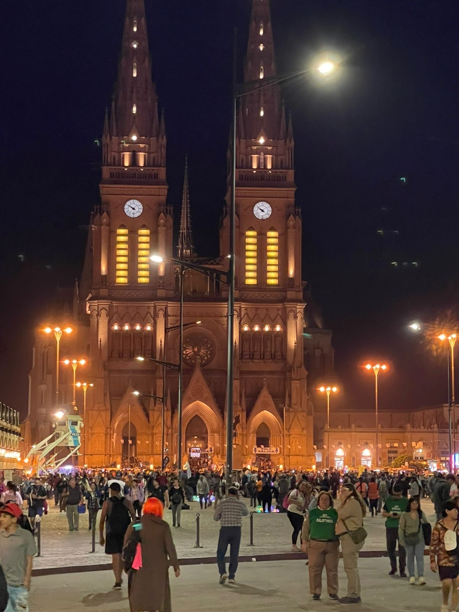

La caminata a Lujan es realizada una vez por año, es decir, anualmente. Esta movilización es una de las más grandes de la Argentina con un estimado de más de 2 Millones de personas movilizadas. Este año fue una Peregrinación importante ya que fue el 50° aniversario desde la primera caminata. Nuestro colegio fue participe de esta nueva peregrinación, como ya lo ha hecho anteriores veces. Fueron alrededor de 90 alumnos y vecinos del barrio con nuestro colegio el C.E.A.E.S. No todos eran peregrinos, sino algunos eran parte del grupo de apoyo, que era un micro que nos abastecía en cada parada. Arrancamos juntándonos a las 8:00 de la mañana del 5 de octubre en el colegio para repartirnos nuestros Números que cada uno iba a tener individualmente y para organizarnos. Aproximadamente a las 9:00 nos fuimos en micro hacia Liniers, donde empezamos la caminata. A las 10:00 de la mañana arrancamos a caminar hacia Morón. A las 12:00 del mediodía llegamos a Morón donde almorzamos y seguimos caminado. A las 14:15 llegamos a la 2da parada en Merlo. La siguiente parada fue en La Reja donde llegamos 18:30 donde pudimos merendar y parar después de una tarde con mucho sol. A General Rodríguez llegamos a las 23:00 donde ya se había hecho de noche y cambiado el clima a uno mucho más frio. La antepenúltima parada fue en el puente de Rodríguez donde hicimos una parada técnica para comer, tomar algo y seguir. En esta parada se subieron al micro 2 peregrinos que estaban muy mal para poder seguir. Finalmente llegamos a Lujan a las 4:30 de la mañana del Domingo 6 de octubre luego de muchas horas. Esta caminata duro 20 horas aproximadamente con todas las paradas que hicimos.
 
